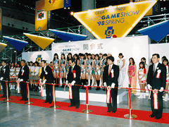
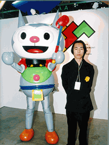

「東京ゲームショウ'98 春」開催にあたり、来賓およびCESA役員出席による開会式が行われました。開会の挨拶でCESA・上月景正会長は「エンターテイメントとして成長したテレビゲームは、生活の中で潤いやきらめきを与え、様々な可能性を持って変革をもたらしてきた。こうした変革はゲームソフトの無限のエネルギーの証と言え、この東京ゲームショウはそうした無限のエネルギーに満ちた新作ソフトの祭典である」と話しました。
また、今回初めて開催された「東京ゲームショウ'98 春」メインビジュアル・大賞の表彰式も行われ、大賞の佐藤
佳さんをはじめ、受賞者が上月会長より表彰されました。

▲テープカットの様子 |

▲大賞受賞者・佐藤 佳さん（右） |
|